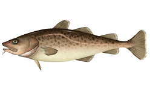

These are draft results until final review and approval by the North Pacific Fishery Management Council
Please note that this page is meant as a tool to help in collaboration among reviewers and assessment authors and as such is not an official publication by NOAA. Everything on this page is preliminary.